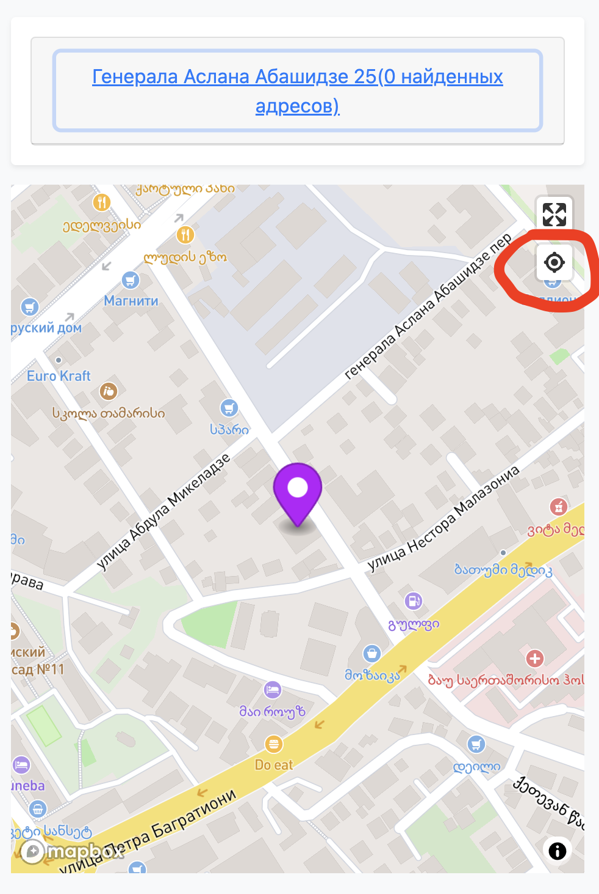
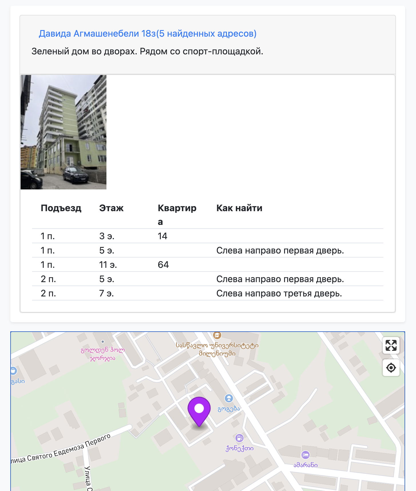

Дорогой возвещатель!
В нашем собрании используется электронная система участков.
Перейдя по ссылке ты увидишь карту участка с некоторыми пояснениями сверху, которые помогут тебе в проработке. Например, “квартиры начинаются со второго этажа” или “вход в дом слева” и т.д. Также в некоторых участках есть фотография дома.
Вот пример участка(по нему не следует ходить - это просто для примера)
Обрати особое внимание, что НЕ СЛЕДУЕТ ориентироваться по адресу дома. Пожалуйста, не используйте адрес в качестве ориентира - в Грузии они могут меняться.
Не нужно спрашивать у людей на улице как найти дом или использовать Google карты или Яндекс навигатор для поиска дома. В ссылке под адресом дома ты увидишь карту в которой точкой отмечен дом, который является твоим участком.
Также работает навигация и можно понять при приближении к дому - что это тот дом который нужно. Чтобы ее активировать - нажми сюда
Еще раз хочется подчеркнуть - что твоим участком является дом, который отмечен точкой на карте - независимо от того, какой у него адрес. Если ты не можешь точно найти нужный дом - пожалуйста свяжись с братом, который отвечает за участки.
Некоторые дома в нашей территории уже содержат найденные квартиры. Нажав на адрес дом в карточке участка откроется меню в котором ты увидишь список квартир, найденных в этом дом. Также в некоторых домах есть фотография дома для того, чтобы мы точно пришли туда, куда нужно.
Если в списке найденных квартир пусто - значит ты можешь посетить всех жильцов в этом доме (или части дома)
Чаще всего в карточке участка будет один или несколько домов. Но особо большие участки разделены. В адресе дома это будет видно. Например, адрес Кобаладзе 8а(подъезд 1) этажи 13-25 означает, что ты можешь поговорить со ВСЕМИ людьми, которые проживают в 1 подъезде на этажах с 13 по 25. Пожалуйста, не заходи на этаж номер 12 или 26, так как там может служить другой возвещаешь.
Твоя задача постараться посетить найденные адреса и дать свидетельство жильцам. Также ты можешь спрашивать соседей в пределах СВОЕГО участка - может быть они знают кого-то еще, кто говорит на русском языке.
На большинстве квартир в нашей территории нет нумерации. Иногда номер двери можно увидеть на пластмассовой коробочке над входом в квартиру. Не нужно искать квартиру по трубам от счетчиков воды или газа.
Чтобы найти квартиру - следуй указаниям, которые написаны в карточке участка. Чаще всего пишут что-то вроде “от лестницы налево - 2 дверь по правой стороне” или как-то иначе. В любом случае, не стесняйся ошибиться и спросить соседей - может быть они смогут помочь найти людей, которые говорят на русском языке и живут на этом этаже.
На проработку участка тебе дается 4 месяца.
Если у тебя изменились обстоятельства и ты не успеваешь пройти участок - ничего страшного - просто сообщи об этом брату, ответственному за участки и он попросит другого возвещателя закончить эту важную работу.
Напиши брату, который отвечает за участки и сообщи следующую информацию:
Нас интересуют люди, которые СВОБОДНО говорят на русском языке. А также любых других языках кроме грузинского, например, английский, турецкий и т.д. Не нужно указывать никакую дополнительную информацию, кроме того, как найти квартиру или на каком языке говорит человек.
Пожалуйста, не указывай номер квартиры, если ОН НЕ НАПИСАН на двери или над ней.
Если что-то непонятно - не стесняйся писать свои вопросы брату, который отвечает за участки.
Большой спасибо тебе за сотрудничество!